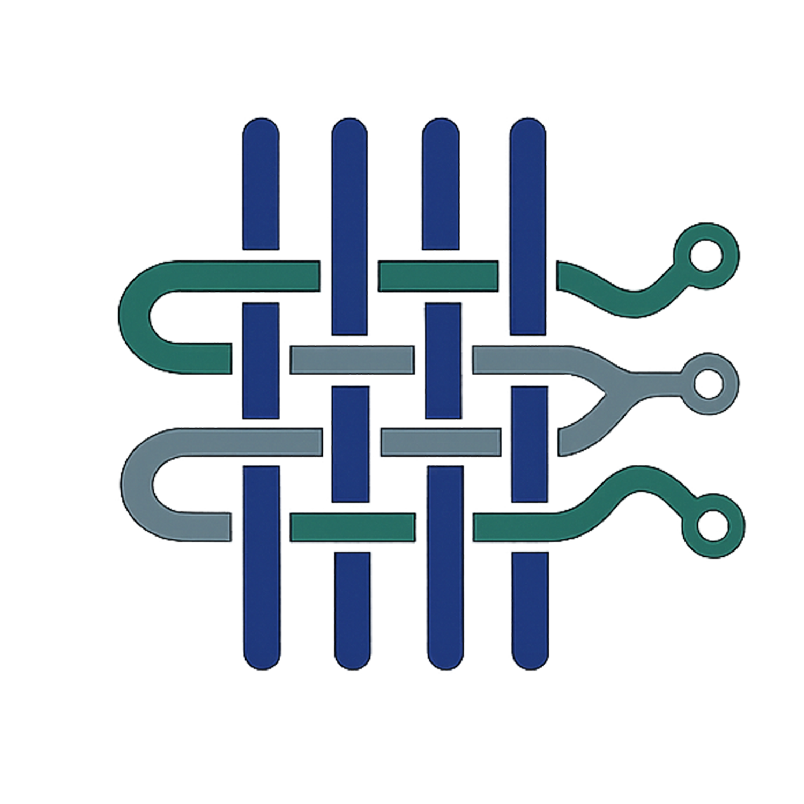

01Autoridade
Mandato e alçadas
Define responsabilidades, escopo e níveis de autorização. O agente sabe quando agir, quando preparar uma decisão e quando pedir aprovação.
Papéis · Permissões · Limites
OURELA-IAby RETEAR® OURELA-IA · inícioUm agente com mandato, alçadas e registro dá continuidade ao que você decide. A OURELA-IA transforma delegação em uma estrutura clara, rastreável e adaptável à sua operação.
Toda empresa delega responsabilidades. Ao delegar a um agente de IA, também é preciso definir o que ele pode executar, o que depende de aprovação, o que é reservado ao responsável humano e como cada movimento será registrado.
A OURELA-IA estrutura essa delegação. O modelo de inteligência artificial pode mudar; o mandato, as alçadas, os registros e a memória operacional permanecem organizados e portáveis.
A autonomia do agente não é presumida: é configurada, delimitada, registrada e acompanhada.
Define responsabilidades, escopo e níveis de autorização. O agente sabe quando agir, quando preparar uma decisão e quando pedir aprovação.
Papéis · Permissões · LimitesLeituras, decisões, autorizações e ações deixam histórico consultável. A gestão pode conferir o que aconteceu sem acompanhar cada interação.
Histórico · Evidências · AuditoriaDiante de risco ou situação fora do previsto, o agente alerta, preserva o estado conhecido e encaminha a decisão ao responsável.
Prudência · ReversibilidadeProjetos, rotinas, compromissos e memória operacional permanecem organizados para sustentar acompanhamento e recuperação de contexto.
Memória · Monitoramento · PortabilidadeUma arquitetura modular conecta governança, processamento, memória e acompanhamento.
Mandatos, alçadas, regras, responsabilidades e critérios de escalonamento.
Agentes, núcleos de instrução, rotinas e ferramentas autorizadas para executar o trabalho.
Dados organizados, registros, documentos e versões que permitem recuperar o contexto.
Painéis, alertas, indicadores e revisão contínua do que foi delegado.
O método é transversal; a configuração acompanha o porte, a maturidade e os processos de cada organização.
Acompanhar prazos, organizar pendências, consolidar informações e preparar o próximo ciclo de trabalho.
↗Manter responsáveis, etapas, decisões, riscos e próximos passos conectados ao histórico.
↗Estruturar acompanhamento de fornecedores, parceiros produtivos, combinados e evidências.
↗Preparar sínteses, indicadores, alertas e alternativas para apoiar a deliberação humana.
↗O agente trabalha dentro de um mandato explícito. A organização determina o que pode ser automatizado e o que permanece sob decisão humana.
A arquitetura foi aplicada primeiro no próprio ecossistema RETEAR® e VMORDEKAI®. Essa experiência orienta a evolução do método e permite desenvolver implantações baseadas em uso real.
O diagnóstico identifica onde a operação depende excessivamente da memória individual e quais responsabilidades podem ser estruturadas para uma delegação segura.
Iniciar diagnóstico ↗